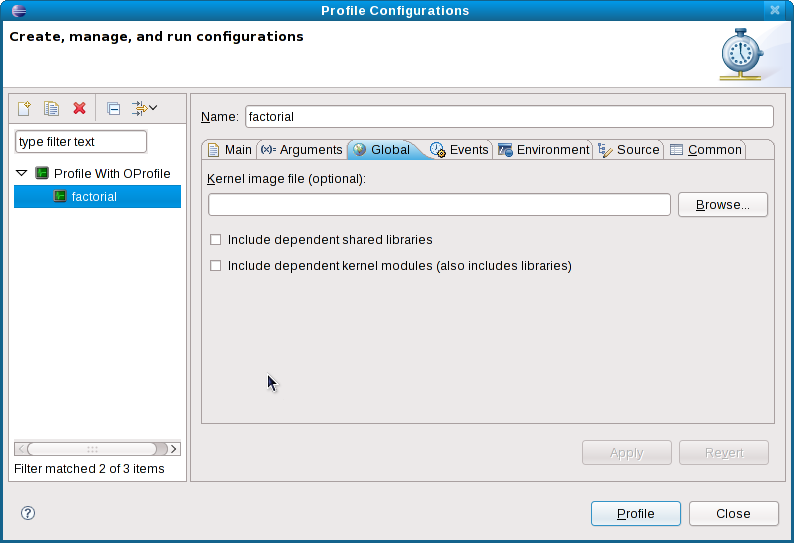
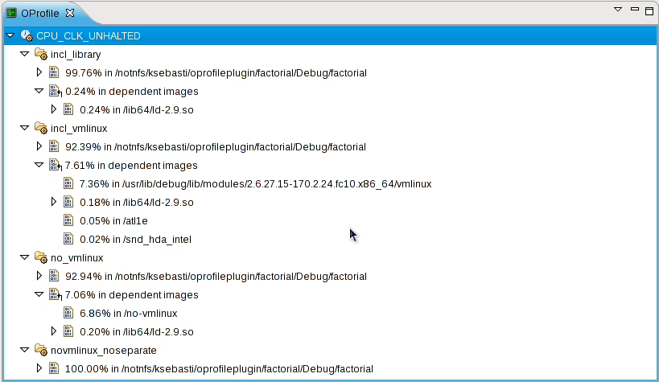
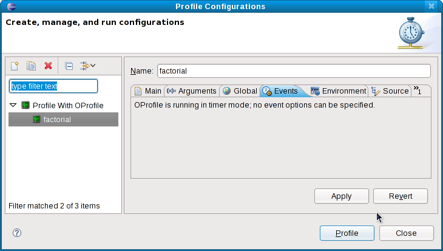
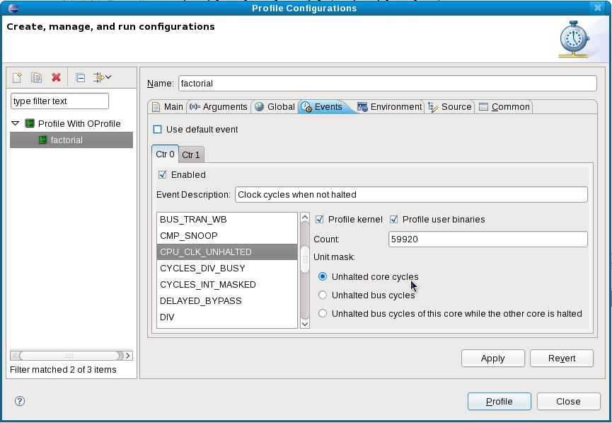

| Profiling Configuration | ||
|---|---|---|
|
|
|
|
| Launching A Profile | OProfile View | |
OProfile has many configuration options, the amount of which can be overwhelming. For more information about these options, refer to http://oprofile.sourceforge.net/doc/controlling.html. The Profile Configurations menu provided by the OProfile plug-in aims to make relevant, commonly-used OProfile configuration options easily accessible to users of all experience levels. Currently, the Profile Configurations menu provides two configuration tabs to the standard CDT launch configuration: Global Settings and Event Configuration.
The Global Settings tab configures how the OProfile daemon gathers profiling information. Each option is described below. 
vmlinux file. A kernel's
vmlinux file contains debugging information required by OProfile. Note that the compressed
vmlinux file, often named
vmlinuz, cannot be used for this purpose.
vmlinux file is specified, the profile will include details of the specific kernel modules in use. Otherwise, kernel samples will be grouped under the name no-vmlinux.
The differences between the options are illustrated in the following OProfile view screenshot:

incl_library was run with only the
Include dependent shared libraries
checked
incl_vmlinux was run with the
vmlinux file specified; both
Include dependent shared libraries
and
Include dependent kernel modules
checked
no_vmlinux was run without any
vmlinux file specified; both
Include dependent shared libraries
and
Include dependent kernel modules
checked
novmlinux_noseparate was run with none of the options checkedYour system processor's hardware profiling registers often contain a large number of options. The Event Configuration tab condenses these options to a more manageable amount.
If your processor (or kernel) does not support the hardware profiling registers OProfile uses, OProfile will run in timer-interrupt mode. This mode has no user-configurable events. For more information about timer-interrupt mode, refer to http://oprofile.sourceforge.net/doc/detailed-parameters.html#timer.
The event configuration tab will then look like the screenshot below:

If your processor (or kernel) supports hardware profiling registers, there are several configuration options available to you. The availability of these configuration options depend on your processor model or kernel version. With proper support, the Events configuration tab will look like the following screenshot:

In regular mode, the Events configuration tab can contain any of the following options:
|
|

|
|
| Launching A Profile | OProfile View |